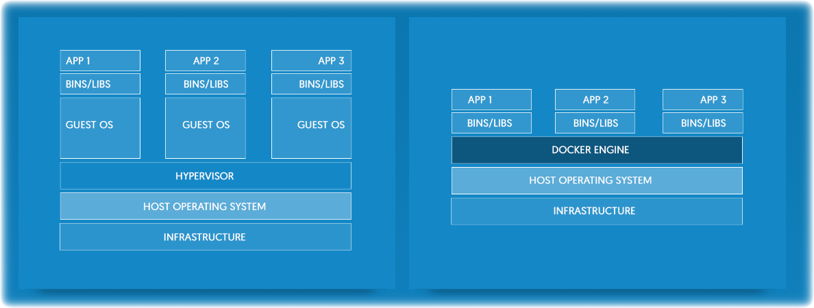

# whomai
El Acheche Anis aka elacheche
Ubuntu-tn Member since 2009
SysAdmin since 2012
Official Ubuntu Member since 2014
Twitter: @elacheche
Don't forget about mentionning the ninja thing
Ubuntu-Tn
Is the approved LoCo team for the Ubuntu users in Tunisia
Created in February 2007 & approved in the 22 July 2008
Main goal is to promote the use of Ubuntu & FOSS throughout the country

- Ubuntu-tn is the approved loco team for the Ubuntu users community in Tunisia. It is formed by volunteers who share a common passion toward free software, believe in this distribution and abide by to the message that it conveys: "humanity to others".
- Ubuntu-tn's goal is to promote the use of the free operating system throughout the country by organizing public events, conferences and visits to schools and universities while assuring the help and the technical support necessary for the new users or those who still wonder if Ubuntu is made for them.
Docker : What! Why!
Docker containers wrap up a piece of software in a complete filesystem that contains everything it needs to run: code, runtime, system tools, system libraries – anything you can install on a server. This guarantees that it will always run the same, regardless of the environment it is running in.
→ by Wikipedia
Add the link to the last slide. https://en.wikipedia.org/wiki/Docker_(software)
Image
An image is a lightweight, stand-alone, executable package that includes everything needed to run a piece of software, including the code, a runtime, libraries, environment variables, and config files.
Container
A container is a runtime instance of an image – what the image becomes in memory when actually executed. It runs completely isolated from the host environment by default, only accessing host files and ports if configured to do so. Containers run apps natively on the host machine’s kernel. They have better performance characteristics than virtual machines that only get virtual access to host resources through a hypervisor. Containers can get native access, each one running in a discrete process, taking no more memory than any other executable.
Virtual Machine vs Docker
Docker in action
$ docker run hello-world
Output
| Unable to find image 'hello-world:latest' locally | | latest: Pulling from library/hello-world | | 78445dd45222: Pull complete | | Digest: sha256:c5515758d4c5e1e838e9cd307f6c6a0d620b5e07e6f927b07d05f6d12a1ac8| | Status: Downloaded newer image for hello-world:latest | | Hello from Docker! |
Dockerfile
$ cat Dockerfile FROM scratch COPY hello / CMD ["/hello"]
Compose
Compose is a tool for defining and running multi-container Docker applications. With Compose, you use a Compose file to configure your application’s services. Then, using a single command, you create and start all the services from your configuration.
Swarm
Docker swarm is a clustering tool, it makes it possible to create and manage a cluster of Docker nodes
Is that what Docker is all about?
Thanks for you attention
How to join us
Anyone can be a Ubuntu-tn member, you need just to subscribe to our ML & contribute to the LoCo
You can find us here too..
- Website : www.ubuntu-tn.org
- IRC : #ubuntu-tn at freenode http://webchat.freenode.net/?channels=ubuntu-tn
- Failb00k : https://www.facebook.com/groups/ubuntu.tn/ & https://www.facebook.com/UbuntuTunisie
- Twitter : @UbuntuTn